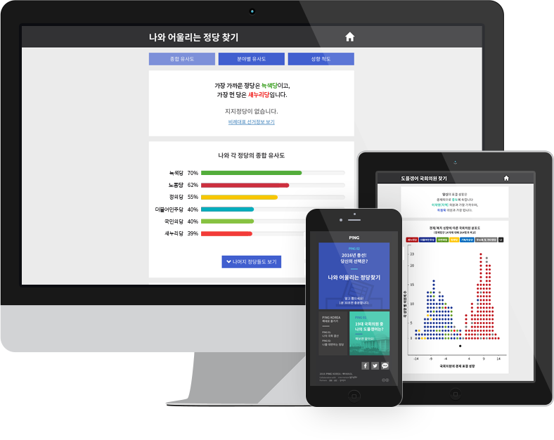

와글은 일상기술과 민주주의가 만날 수 있는 디지털 플랫폼을 연구하고 제공함으로써, 더 많은 사람들이 정치적 효능감을 갖고 공동체의 문제를 해결하기 위해 지속적으로 참여함으로써 A.R.T. 민주주의를 만들어가는 아티스트가 되기를 희망합니다.

P!NG KOREA 핑코리아
“국내 최초의 온라인 투표 가이드 서비스”를 표방하는 핑코리아는 와글 내에서 인큐베이팅한 정치 애플리케이션 프로젝트 팀에 의해 탄생했습니다. 다차원 정치 성향 분석을 통해 정치, 외교, 경제, 사회 등 여러 영역의 구체적인 이슈에 대한 이용자의 답변을 토대로 서비스 이용자와 정당 또는 후보 간의 궁합을 시각적으로 보여줌으로써, 이용자의 정책 투표를 독려합니다. 핑코리아 바로가기

 Search
Search